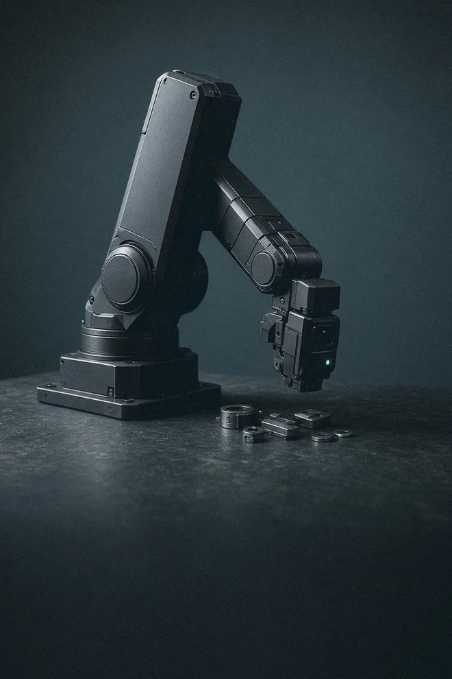

Forstå teknologien.
Find selskaberne bag.
Udforsk den teknologiske udvikling, se hvilke selskaber der gør den mulig, og følg hvordan den viser sig i deres forretninger og i fonden.
Hvad er du nysgerrig på?
Gå direkte til et tema. Hver side har sin egen forklaring, interaktive tegning og vej til selskaberne.
AI · fra anvendelse til strøm

Software & AI
Hvilken opgave er kunden afhængig af at få løst?
2,35 % af fonden · Udforsk temaet →
Chips og halvledere
Hvilken del af chippen er selskabets forretning?
24,31 % af fonden · Udforsk temaet →
Datacentre
Hvad skal der til for, at maskinerne arbejder sammen?
12,59 % af fonden · Udforsk temaet →
Energi og elnet
Hvor i energisystemet leverer selskabet sin løsning?
16,96 % af fonden · Udforsk temaet →Platforme · handel og betaling

Teknologi i den fysiske verden

Robotter & fysisk AI
Leverer selskabet en sans, styringen eller hele maskinen?
7,23 % af fonden · Udforsk temaet →
Rumfart
Er produktet en opsendelse, en forbindelse eller data?
5,99 % af fonden · Udforsk temaet →
Kvantecomputere
Hvad er demonstreret, og hvad er faktisk en forretning?
1,57 % af fonden · Udforsk temaet →
Sundhed og biotek
Hvilket produkt er dokumenteret, og hvem betaler?
1,77 % af fonden · Udforsk temaet →
Råstoffer
Hvor i vejen fra råstof til materiale arbejder selskabet?
6,69 % af fonden · Udforsk temaet →Andele af hele fonden, afdelingen PMINDI pr. 16.10.2026. Fondens data. Temaerne er NewDeal Invests egen opdeling.
Se forbindelserne
Hvordan hænger det sammen i praksis?
Et svar fra en AI-tjeneste kræver både software, servere, chips og strøm. Følg ét spørgsmål gennem seks lag, og se hvilken opgave hvert lag løser. Turen er et eksempel på forbindelserne mellem temaerne — du kan også gå direkte til det tema, du er nysgerrig på.
Følg et AI-svar fra skærm til strøm →